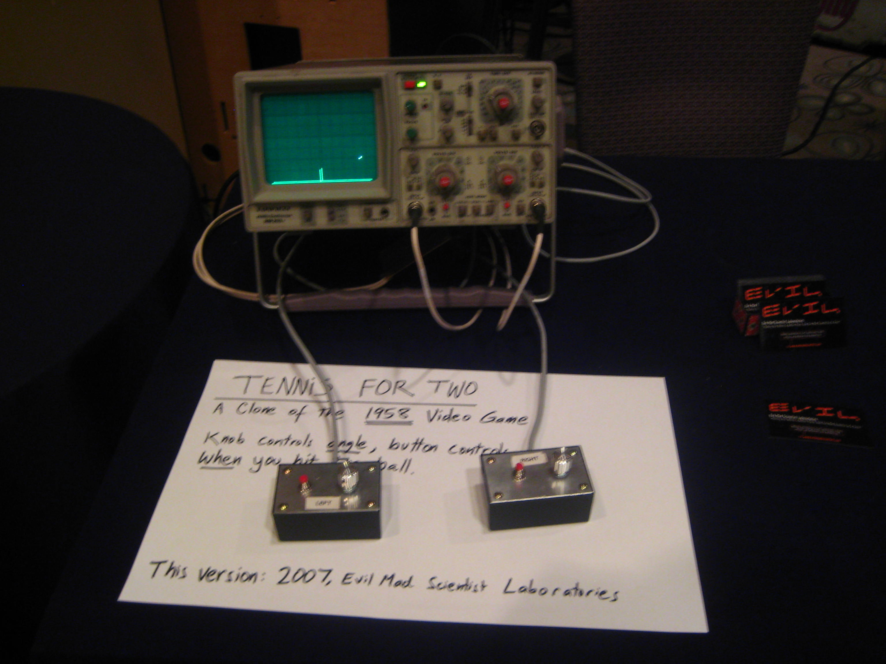
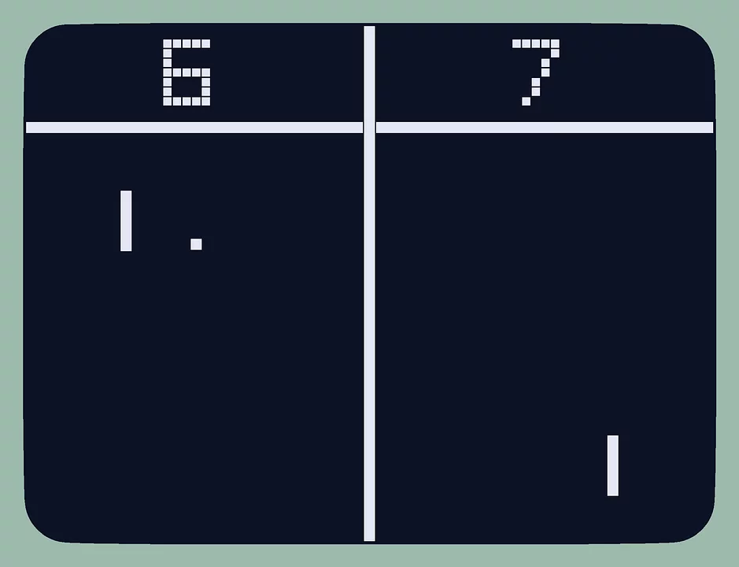
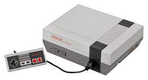

L'histoire du jeux vidéo
Du Début à Atari
La grande histoire du jeu vidéo commence en 1958, quand les chercheurs William Higinbotham et Robert
Dvorak
souhaitent trouver un moyen d’égayer les journées portes ouvertes du laboratoire national de
Brookhaven,
sur
la côte Est des Etats-Unis. Un ordinateur gigantesque avec un oscilloscope en guise d’écran feront
l’affaire
: Tennis for Two
naît durant l’été 58, et fait le bonheur des visiteurs de l’événement deux
années
durant. L’exploration
de l’informatique
ludique se poursuit, principalement dans les universités
américaines,
jusqu’à la sortie dans le commerce de la première
machine de jeu, en 1971. Computer Space est un
clone
de
Space War, développé en 1962 par des étudiants du Massachusett
Institute of Technology, qu’un
certain
Nolan
Bushnell lancera sur le marché près de dix ans plus tard. Le succès est timide,
mais ne
refroidira
pas
Bushnell et son compère Ted Dabney, qui fondent Atari l’année suivante.

Pong et première console d'Atari
Si c’est avec Pong qu’Atari lance la grande histoire du jeu vidéo, la société américaine perdra
pourtantson procès contre
Magnavox,qui accuse à l’époque différents constructeurs de violer
un certain nombre de ses brevets.La borne du jeu de
tennis en vue du dessus,commercialisée
à plus de 10 000 exemplaire entre 1971 et 1974, dégage plus de 40 millions de
dollars de
chiffre d’affaires en 1975,poussant Atari à en concevoir et commercialiser une version console
de salon.Sorti
pour Noël 1975, Home Pong impose un nouveau divertissement dans les foyers,
et consacre Atari comme la première grande
entreprise du jeu vidéo.

Le jeu vidéo devient une jungle
Devant le succès public et commercial de Pong, d’autres entreprises emboîtent immédiatement le pas
d’Atari :
la société du pionnier Ralph Baer sort pas moins de huit consoles Magnavox entre 1975
et
1977,
Nintendo se
lance à son tour avec la Color TV-Game 6 en 1977 et Coleco s’invite à la fête avec
différents modèles de Telstar.
Les dispositifs se multiplient, mais le public se lasse des clones de Pong et de la nécessité
d’acheter
de nouvelles
machines. Malgré un succès relatif, la Fairchild Channel F. marque l’histoire en
1976
avec
son système de cartouches
échangeables, largement repris ensuite, et le japonais Taito
révolutionne
l’arcade avec Space Invaders, le premier
shoot’em up qui démocratisera les lieux de socialisation
liés
au jeux vidéo.
Sorti en 1978, il oblige l’état japonais à
quadrupler sa production de yens pour permettre à ses
ressortissants d’assouvir leur passion pour le jeu,
qui est le premier à conserver les meilleures
scores.
La bulle éclate et l’industrie s’assainit
Les acteurs se multiplient, aveuglés par les chiffres alléchants et le succès retentissant de
certains
titres,
comme Pac-Man et Ultima en 1980.
L’arrivée de micro-ordinateurs puissants, permettant de jouer mais aussi de
coder ses propres
jeux
(Commodore 64, Amstrad CPC puis Amiga), ainsi que la mise en circulation de centaines
de jeux
médiocres
saturent le marché de la console, qui ne fait plus autant recette.
La crise du jeu vidéo frappe
l’ensemble des acteurs de plein fouet. Le symbole le plus connu est
l’adaptation du film de E.T. de Steven Spielberg.
Le jeu est raté au point qu’Atari décide, selon
la
légende, d’enterrer une partie des invendus dans le désert.
Un mythe confirmé en 2014, lorsque
pas moins
de 728 000 cartouches sont déterrées au Nouveau-Mexique.
De nombreuses sociétés font faillite, tandis que dans le même temps Nintendo frappe fort avec ce qui
va
s’avérer
être la relève de la console : la Nintendo Entertainment System, ou NES sort au Japon
en 1983,
avant de confirmer aux Etats-Unis et en Europe, à partir de 1985.
